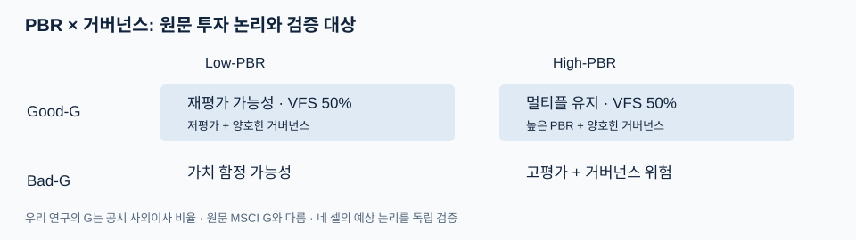
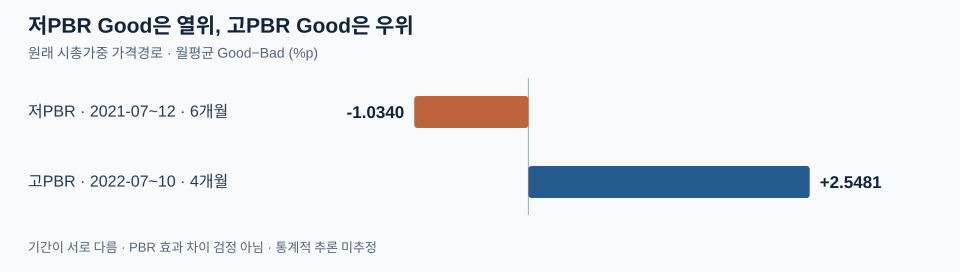
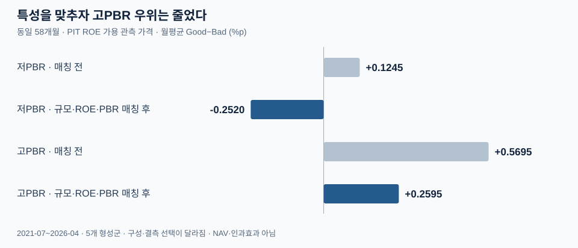
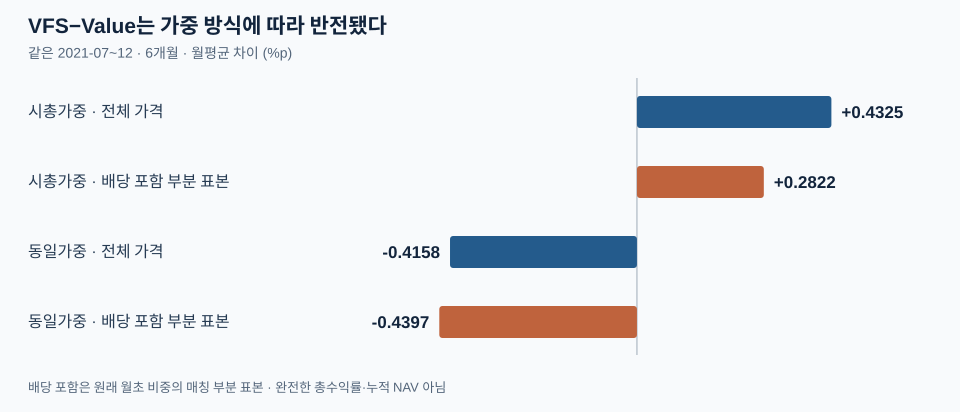

연구 목적
미래에셋증권 「멀티플 탈출」의 VFS 아이디어에서 출발해, 공시된 사외이사 비율이 PBR 기반 종목선별에 추가적인 정보를 제공하는지 검토한다. 원문의 MSCI Governance Score를 재현한 연구는 아니다.
핵심 결과: 저PBR과 고PBR의 관측 성과가 다르고, 기업 특성 및 가중 방식에 따라 상대성과가 달라졌다.
목차
Ⅰ. 서론 — 연구 배경과 설계
낮은 PBR은 저평가뿐 아니라 기업 고유의 위험을 반영할 수 있다. 미래에셋증권의 VFS는 PBR과 거버넌스를 함께 고려해 Low-Good 및 High-Good 기업을 선별한다.
본 연구에서는 사외이사 수/전체 이사 수를 거버넌스의 공개 대리지표로 사용했다. PBR을 저·고 구간으로 나눈 뒤 각 구간에서 사외이사 비율 중앙값을 기준으로 Good/Bad를 분류했다. Good은 상대적으로 사외이사 비율이 높은 집단을 의미하며, 기업 지배구조 전반이 우수하다는 판정은 아니다.
분석 범위: 공시 시점(PIT)을 반영한 2021–2025년 형성군. 보유 가격수익률 비교와 58개월 관측 종목 단면을 구분해 사용한다.

Ⅱ. 본론 — 주요 실증 결과
1. PBR 구간별 상대성과
저PBR에서는 비율 상위 집단이 부진했고, 고PBR에서는 다른 기간에 우세했다.
| 구간·연속기간 | Good 누적 | Bad 누적 | Good−Bad 월평균 |
|---|---|---|---|
| 저PBR · 2021.07–12 · 6개월 | -14.38% | -9.05% | -1.0340%p |
| 고PBR · 2022.07–10 · 4개월 | 2.59% | -7.47% | +2.5481%p |

주의: 두 결과는 서로 다른 시장기간의 가격수익률이다. 기간 차이를 통제한 거버넌스 효과의 검정 결과는 아니다.
2. 기업 특성 매칭 후 비교
규모·ROE·PBR이 유사한 기업을 비교하면 고PBR의 양의 차이는 축소됐다.
| 58개월 관측 단면 · Good−Bad | 매칭 전 | 매칭 후 |
|---|---|---|
| 저PBR | +0.1245%p/월 | -0.2520%p/월 |
| 고PBR | +0.5695%p/월 | +0.2595%p/월 |

같은 형성연도·PBR 집단에서 시가총액, 공시 시점 ROE, PBR이 유사한 기업을 1:1 매칭했다. 매칭 전후 표본 구성은 다르며, 58개월 값은 관측 종목의 평균 차이이지 투자 가능한 전략 수익률이나 인과효과가 아니다.
3. VFS의 Value 대비 성과와 가중치 민감도
Value와 동일 조건으로 비교하는 공통 연속 기간은 2021-07~2021-12(6개월)입니다. 이 기간 누적 가격수익률은 VFS -11.14%, Value -13.72%, KOSPI -10.50%이며, VFS−Value 월평균 차이는 +0.43%p입니다.
다만 동일가중 기준 VFS−Value 월평균 차이는 -0.4158%p로 부호가 반전됐다. FnGuide 배당 포함 수익률을 사용한 부분 표본에서도 시총가중 +0.2822%p, 동일가중 -0.4397%p로 차이가 유지됐다. 배당 포함 결과는 전체 보유종목을 포함한 완전한 포트폴리오 성과가 아니다.

Ⅲ. 결론 — 투자적 시사점
사외이사 비율 하나를 PBR에 추가한다고 해서 종목선별 성과가 일관되게 개선되지는 않았다. 저PBR의 연속 가격경로에서는 비율 상위 집단이 부진했고, 고PBR의 다른 기간에는 우위가 나타났다. 기업규모·ROE·PBR이 유사한 표본에서는 고PBR의 양의 차이가 줄었으며, VFS의 Value 대비 성과도 가중 방식에 따라 반전됐다.
따라서 단일 공개 지표의 선별력에는 한계가 있으며, 규모·수익성과 투자 구현 조건을 함께 고려해야 한다. 이는 MSCI Governance Score를 사용한 원문 전략의 성과를 직접 반박하는 결과는 아니다.
해석 범위: 연속 가격경로는 4–6개월로 짧고, 58개월 단면은 투자 가능한 연속 수익률이 아니다. 배당 포함 수익률은 부분 표본에서만 검증했다.